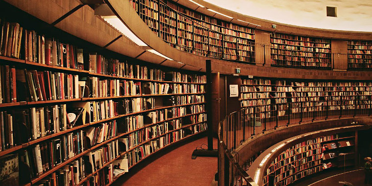

Kitap Okumak
Kitap okumayı en çok geceleri severim. Hafta sonları kaç gece kitap okuyarak sabahladığımı hatırlıyorum. Kitap okuyarak hayal kurmak çok sık yaptığım bir seydir. Kendimi okuduğum kitabın kahramanının yerine koyup, onun yaşadığı şeyleri kendim yaşıyormuş gibi hayal ederim hep. Genelde fantastik kitaplar okurum. Kitap okurken genelde müzik dinlerim ve okuduğum kitapların şarkısı vardır. Kitap okurken kitabın içindeki sevdiğim kısımların altını çiziyorum hep. Sevdiğim sözleri sonradan tekrar tekrar okurum ve not ederim. Merak ettiğim bütün kitapları okumayı ve çok geniş bir kitaplığımın olmasını istiyorum.
